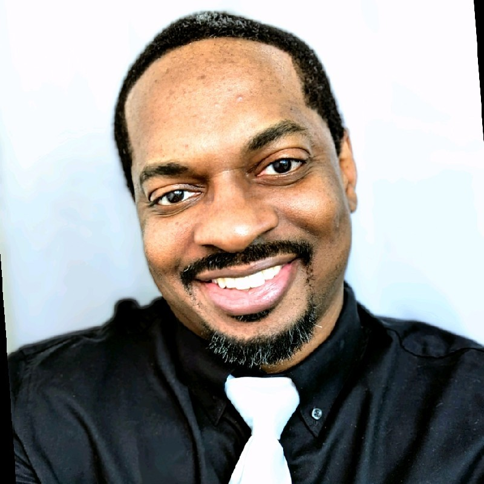
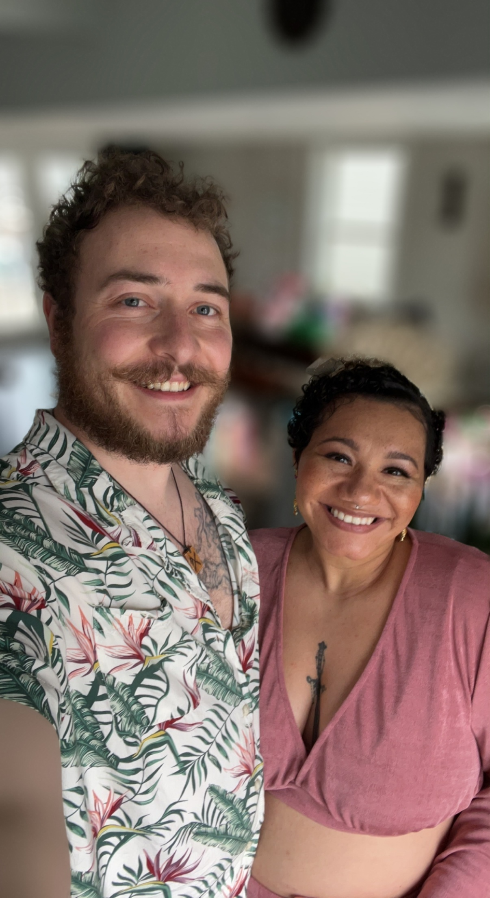
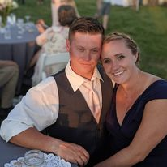
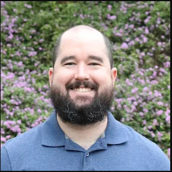

Darshon Crudup is an experienced Army Veteran and Creator with a background in office administration, graphic design, writing, and film. Currently attending Code Fellows to obtain certification in software development to be become a full-stack developer in HTML and CSS.

Logan Reese is currently developing skill-set to become a python developer at Code Fellows. Prior armored vehicle and firetruck apparatus mechanic. USAF veteran with aviation mechanic experience on KC135.

Ryan Eastman is a software Development student at Code Fellows. Gaining proficiency with JavaScript, HTML and CSS. Working towards becoming a full-stack JavaScript Developer. Critical thinking, problem solving, and leadership skills acquired from service in United States Navy.

Reece Renninger is a prior military member who served in the United States Marine Corps as infantry. Attended California State University Long Beach and got a BA in Psychology.Currently attending Code Fellows Seattle to become proficient in JavaScript, HTML, and CSS.